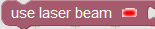
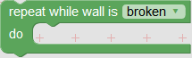
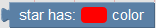

×
Level 1 - Movement
- Πάνω αριστερή γωνία: Αυτή είναι η περιοχή του παιχνιδιού. Εδώ ζει ο/η . Μπορείς να καθοδηγήσεις τον/την τοποθετώντας μπλοκ στην περιοχή Blockly.
- Πάνω δεξιά γωνία: Αυτή είναι η περιοχή Blockly όπου βρίσκονται οι εντολές (μπλοκ). Μπορείς να σύρεις και να αφήσεις τα μπλοκ μέσα στην άσπρη περιοχή και όταν πατήσεις το Run game κουμπί, ο/η θα ακολουθήσει τις εντολές σου.
- Κάτω αριστερή γωνία: Αυτή είναι η περιοχή των οδηγιών. Εδώ θα μάθεις την λειτουργικότητα των μπλοκ, τους στόχους του επιπέδου και τους αντιπάλους σου.
- Κάτω δεξιά γωνία: Αυτή είναι η περιοχή εκτέλεσης του αποτελέσματος του παιχνιδιού. Σε αυτήν την περιοχή μπορείς να δεις πόσα μπλοκ χρησιμοποίησες, ποιους τύπους μπλοκ και πόσες φορές επανεκκίνησες το επίπεδο. Επίσης θα βρεις χρήσιμες συμβουλές σε μερικές περιπτώσεις.
Λειτουργικότητα των μπλοκ:
- Block start ( ): Αυτό είναι πάντα το πρώτο μπλοκ των εντολών σου. Τοποθέτησε αυτό το μπλοκ στη αρχή του αλγορίθμου.
): Αυτό είναι πάντα το πρώτο μπλοκ των εντολών σου. Τοποθέτησε αυτό το μπλοκ στη αρχή του αλγορίθμου.
- Block move left ( ): Αυτό το μπλοκ θα μετακινήσει τον/την 100 pixel αριστερά. 100 pixel είναι η απόσταστη μεταξύ 2 αστεριών.
): Αυτό το μπλοκ θα μετακινήσει τον/την 100 pixel αριστερά. 100 pixel είναι η απόσταστη μεταξύ 2 αστεριών.
- Block move right ( ): Αυτό το μπλοκ θα μετακινήσει τον/την 100 pixel δεξιά.
): Αυτό το μπλοκ θα μετακινήσει τον/την 100 pixel δεξιά.
Level 2 - Jump
Νέα εμπόδια:
- Καρφιά ( ). Τα καρφιά είναι επικίνδυνα και θα τραυματίσουν οποιονδήποτε πατήσει επάνω τους. Ένας/Μια τραυματισμένος/η εξερευνητής δεν θα μπορέσει να υπακούσει τις εντολές σου.
). Τα καρφιά είναι επικίνδυνα και θα τραυματίσουν οποιονδήποτε πατήσει επάνω τους. Ένας/Μια τραυματισμένος/η εξερευνητής δεν θα μπορέσει να υπακούσει τις εντολές σου.
Νέο μπλοκ:
- Jump ( ). Με το "jump" μπλοκ μπορείς να πεις τον/την να κάνει ένα άλμα. Εάν επιθυμείς να κάνεις ένα άλμα και να κινηθείς ταυτόχρονα (δεξιά ή αριστερά) τότε χρησιμοποίησε το Jump μπλοκ πρώτα και κάτω από το Jump μπλοκ χρησιμοποίησε το move (left ή right) μπλοκ.
). Με το "jump" μπλοκ μπορείς να πεις τον/την να κάνει ένα άλμα. Εάν επιθυμείς να κάνεις ένα άλμα και να κινηθείς ταυτόχρονα (δεξιά ή αριστερά) τότε χρησιμοποίησε το Jump μπλοκ πρώτα και κάτω από το Jump μπλοκ χρησιμοποίησε το move (left ή right) μπλοκ.
Προσοχή: Από τώρα και στο εξής, κάθε φορά που θα πατήσεις το Reset Game κουμπί, ο/η θα χάσει 10 πόντους από το σκορ.
Πάντα να θυμάσαι: Ο/Η κινείται 100 pixels την φορά. Η απόσταση μεταξύ 2 αστεριών είναι 100 pixels.
Τώρα είναι η σειρά σου να κερδίσεις το επίπεδο. Καλή τύχη!
Level 3 - Repeat 'n' times
Νέα Εμπόδια:
- Εξωγήινος ( ). Οι εξωγήινοι προσελκύονται από τα αστέρια και επιτίθενται οποιονδήποτε τα πλησιάζει.
). Οι εξωγήινοι προσελκύονται από τα αστέρια και επιτίθενται οποιονδήποτε τα πλησιάζει.
Νέα μπλοκ:
- Repeat 3 times ( ). Με το "repeat 3 times" μπλοκ, όπως υποδηλώνει το όνομα του, μπορείς να επαναλάβεις τις ίδιες εντολές τρεις φορές. Μπορείς να αλλάξεις τον αριθμό "3" σε οποιονδήποτε αριθμό επιθυμείς και οι εντολές που θα χρησιμοποιήσεις στο σώμα του θα επαναληφθούν τόσες φορές όσες και ο αριθμός που χρησιμοποιήσεις στο repeat μπλοκ. Για παράδειγμα, εάν χρησιμοποιήσεις το repeat "2" times μπλοκ και μέσα στο repeat μπλοκ τοποθετήσεις το "move right" μπλοκ, τότε ο/η θα μετακινηθεί 2 αστέρια κατά δεξιά (200pixels).
). Με το "repeat 3 times" μπλοκ, όπως υποδηλώνει το όνομα του, μπορείς να επαναλάβεις τις ίδιες εντολές τρεις φορές. Μπορείς να αλλάξεις τον αριθμό "3" σε οποιονδήποτε αριθμό επιθυμείς και οι εντολές που θα χρησιμοποιήσεις στο σώμα του θα επαναληφθούν τόσες φορές όσες και ο αριθμός που χρησιμοποιήσεις στο repeat μπλοκ. Για παράδειγμα, εάν χρησιμοποιήσεις το repeat "2" times μπλοκ και μέσα στο repeat μπλοκ τοποθετήσεις το "move right" μπλοκ, τότε ο/η θα μετακινηθεί 2 αστέρια κατά δεξιά (200pixels).
- uses laser beam (). Με αυτό το μπλοκ μπορείς να προετοιμάσεις τον/την να ρίξει μια ακτίνα φωτός.
- shoot laser beam ( ). Με αυτό το μπλοκ μπορείς να πεις τον/την σε ποιά κατεύθυνση να ρίξει την ακτίνα φωτός.
). Με αυτό το μπλοκ μπορείς να πεις τον/την σε ποιά κατεύθυνση να ρίξει την ακτίνα φωτός.
Προσοχή: Από τώρα και στο εξής, κάθε φορά που θα πατήσεις το Reset Game κουμπί, ο/η θα χάσει 10 πόντους από το σκορ.
Πάντα να θυμάσαι: Ο/Η κινείται 100 pixels την φορά. Η απόσταση μεταξύ 2 αστεριών είναι 100 pixels.
Ήρθε η σειρά σου να κερδίσεις το Επίπεδο!
Level 4 - Repeat While
Νέα Εμπόδια:
- Τοίχος ( ). Ένας τοίχος είναι ένα εμπόδιο που κλείνει το μονοπάτι σου. Μπορείς να σπάσεις τον τοίχο εάν το επιτεθείς αρκετές φορές. Το νέο "repeat while wall is (broken or not broken)" μπλοκ θα σε βοηθήσει να σπάσεις τον τοίχο.
). Ένας τοίχος είναι ένα εμπόδιο που κλείνει το μονοπάτι σου. Μπορείς να σπάσεις τον τοίχο εάν το επιτεθείς αρκετές φορές. Το νέο "repeat while wall is (broken or not broken)" μπλοκ θα σε βοηθήσει να σπάσεις τον τοίχο.
Νέο μπλοκ:
- Repeat while wall is (broken or not broken) (). Αυτό το μπλοκ θα σε βοηθήσει να σπάσεις τον τοίχο. Έχεις δύο επιλογές (broken or not broken). Αυτές οι επιλογές ονομάζονται συνθήκες. Το Repeat while wall is (broken or not broken) μπλοκ θα επαναλαμβάνει τα μπλοκ εντολών που θα τοποθετήσεις μέσα του όσο η συνθήκη σου είναι αληθής. Για παράδειγμα όταν ξεκινάς αυτό το επίπεδο ο τοίχος είναι "not broken". Εάν επιτεθείς τον τοίχο επανειλημμένα τότε κάποια στιγμή θα σπάσει. Έτσι μπορείς να χρησιμοποιήσεις το "repeat while wall is not broken" μπλοκ και μέσα του να βάλεις το "use laser beam" μπλοκ για να επιτεθείς τον τοίχο πολλές φορές. Όταν ο τοίχος σπάσει (broken), το "repeat while wall is not broken" μπλοκ θα σταματήσει να επαναλαμβάνει τα μπλοκ που έβαλες μέσα του.
Προσοχή 1: Κάθε φορά που πατάς το Reset Game κουμπί, ο/η θα χάσει 10 πόντους από το σκορ.
Προσοχή 2: Εάν δεν τοποθετήσεις κανένα μπλοκ μέσα στο Repeat while wall is (broken or not broken) μπλοκ και η συνθήκη του είναι αληθής, τότε ο/η θα συνεχίσει να πηγαίνει δεξιά και αριστερά χωρίς να ξέρει τι να κάνει.
Πάντα να θυμάσαι: Ο/Η κινείται 100 pixels την φορά. Η απόσταση μεταξύ 2 αστεριών είναι 100 pixels.
Level 5 - Repeat Until
Νέο Μπλοκ:
- Repeat until wall is (broken or not broken) ( ). Αυτό το μπλοκ θα σε βοηθήσει να σπάσεις τον τοίχο. Έχεις δύο επιλογές (broken or not broken). Θυμήσου ότι αυτές οι επιλογές ονομάζονται συνθήκες. Το "Repeat until wall is (broken or not broken)" μπλοκ θα συνεχίσει να επαναλαμβάνει τα μπλοκ που θα τοποθετήσεις μέσα του όσο η συνθήκη είναι ψευδής. Για παράδειγμα όταν ξεκινάς αυτό το επίπεδο, ο τοίχος μέσα στο παιχνίδι είναι "not broken". Εάν επιτεθείς επανειλημμένα τότε ο τοίχος κάποια στιγμή θα σπάσει. Έτσι μπορείς να χρησιμοποιήσεις το "repeat until wall is broken" μπλοκ και μέσα του να τοποθετήσεις το laser beam μπλοκ για να επιτεθείς τον τοίχο πολλές φορές. Όταν ο τοίχος σπάσει το "repeat until wall is broken" μπλοκ θα σταματήσει να επαναλαμβάνει τα μπλοκ που τοποθέτησες μέσα του.
). Αυτό το μπλοκ θα σε βοηθήσει να σπάσεις τον τοίχο. Έχεις δύο επιλογές (broken or not broken). Θυμήσου ότι αυτές οι επιλογές ονομάζονται συνθήκες. Το "Repeat until wall is (broken or not broken)" μπλοκ θα συνεχίσει να επαναλαμβάνει τα μπλοκ που θα τοποθετήσεις μέσα του όσο η συνθήκη είναι ψευδής. Για παράδειγμα όταν ξεκινάς αυτό το επίπεδο, ο τοίχος μέσα στο παιχνίδι είναι "not broken". Εάν επιτεθείς επανειλημμένα τότε ο τοίχος κάποια στιγμή θα σπάσει. Έτσι μπορείς να χρησιμοποιήσεις το "repeat until wall is broken" μπλοκ και μέσα του να τοποθετήσεις το laser beam μπλοκ για να επιτεθείς τον τοίχο πολλές φορές. Όταν ο τοίχος σπάσει το "repeat until wall is broken" μπλοκ θα σταματήσει να επαναλαμβάνει τα μπλοκ που τοποθέτησες μέσα του.
Προσοχή 1: Κάθε φορά που πατάς το Reset Game κουμπί, ο/η θα χάσει 10 πόντους από το σκορ.
Προσοχή 2: Εάν δεν τοποθετήσεις κανένα μπλοκ μέσα στο Repeat while wall is (broken or not broken) μπλοκ και η συνθήκη του είναι αληθής, τότε ο/η θα συνεχίσει να πηγαίνει δεξιά και αριστερά χωρίς να ξέρει τι να κάνει.
Πάντα να θυμάσαι: Ο/Η κινείται 100 pixels την φορά. Η απόσταση μεταξύ 2 αστεριών είναι 100 pixels.
Level 6 - Simple If
Νέο Μπλοκ:
- if (condition) ( ). Από τα προηγούμενα επίπεδα έμαθες ότι μια συνθήκη μπορεί να είναι είτε αληθής είτε ψευδής. Εάν η συνθήκη είναι αληθής τότε τα μπλοκ που θα τοποθετήσεις μέσα στο "if" μπλοκ θα εκτελεστούν μία φορά χωρίς επανάληψη. Εάν τοποθετήσεις το "if" μπλοκ μέσα στο "repeat" μπλοκ τότε το "if" μπλοκ θα εκτελεστεί όσες φορές εκτελεστεί και το repeat μπλοκ.
). Από τα προηγούμενα επίπεδα έμαθες ότι μια συνθήκη μπορεί να είναι είτε αληθής είτε ψευδής. Εάν η συνθήκη είναι αληθής τότε τα μπλοκ που θα τοποθετήσεις μέσα στο "if" μπλοκ θα εκτελεστούν μία φορά χωρίς επανάληψη. Εάν τοποθετήσεις το "if" μπλοκ μέσα στο "repeat" μπλοκ τότε το "if" μπλοκ θα εκτελεστεί όσες φορές εκτελεστεί και το repeat μπλοκ.
- star has:"option" color (). Αυτή είναι η συνθήκη του "if" μπλοκ. Με αυτό το μπλοκ μπορείς να ελέγχεις εάν ο/η βρίσκεται πίσω από ένα κόκκινο (ή πράσινο ή μπλε) αστέρι. Εάν ο/η βρίσκεται πίσω από το χρώμα του αστεριού που επέλεξες τότε η συνθήκη του "if" μπλοκ γίνεται αληθής και τα μπλοκ που έβαλες μέσα στο "if" μπλοκ εκτελούνται.
- collect "option" star ( ). Με αυτό το μπλοκ μπορείς να ζητήσεις από τον/την να συλλέξει το πολύχρωμο αστέρι της επιλογής σου. Ο/Η θα πρέπει να βρίσκεται πίσω από το πολύχρωμο αστέρι για να μπορέσει να το μαζέψει. Η συλλογή των πολύχρωμων αστεριών είναι δύσκολη και για τον λόγο αυτό θα πρέπει να ζητάς από τον/την εξερευνητή/τρια να μαζέψει ένα πολύχρωμο αστέρι την σωστή χρονική στιγμή. Διαφορετικά θα σπαταλήσεις πολύτιμο χρόνο.
). Με αυτό το μπλοκ μπορείς να ζητήσεις από τον/την να συλλέξει το πολύχρωμο αστέρι της επιλογής σου. Ο/Η θα πρέπει να βρίσκεται πίσω από το πολύχρωμο αστέρι για να μπορέσει να το μαζέψει. Η συλλογή των πολύχρωμων αστεριών είναι δύσκολη και για τον λόγο αυτό θα πρέπει να ζητάς από τον/την εξερευνητή/τρια να μαζέψει ένα πολύχρωμο αστέρι την σωστή χρονική στιγμή. Διαφορετικά θα σπαταλήσεις πολύτιμο χρόνο.
Προσοχή: Κάθε φορά που πατάς το Reset Game κουμπί, ο/η θα χάσει 10 πόντους από το σκορ.
Πάντα να θυμάσαι: Ο/Η κινείται 100 pixels την φορά. Η απόσταση μεταξύ 2 αστεριών είναι 100 pixels.
Level 7 - If - else
Σημαντικό μπλοκ:
- if (condition) else if(condition) else (). Στο Επίπεδο 6 έμαθες την λειτουργικότητα του απλού "if" μπλοκ. Τώρα είναι η στιγμή να δημιουργήσεις έναν "else if" έλεγχο. Εάν προσέξεις το "if" μπλοκ θα δεις ένα μικρό γρανάζι () πάνω του. Με αυτό το κουμπί μπορείς να επεκτείνεις το απλό if μπλοκ και να τοποθετήσεις περισσότερες συνθήκες. Στο παιχνίδι υπάρχουν τρεις διαφορετικοί τύποι πολύχρωμων αστεριών(κόκκινα, πράσινα, μπλε). Κάθε φορά που ο/η εξερευνητής/τρια βρίσκεται πίσω από ένα πολύχρωμο αστέρι θα πρέπει να ελέγχεις το χρώμα του αστεριού μέσα από την συνθήκη του "if" ή "else if" και εάν η συνθήκη είναι αληθής θα πρέπει να πεις στον/στην να μαζέψει το πολύχρωμο αστέρι. Ο/Η θα ξεκινήσει ελέγχοντας την πρώτη συνθήκη από το "if-else" μπλοκ. Εάν η πρώτη συνθήκη είναι αληθής τότε ο/η θα εκτελέσει τα μπλοκ εντολών που τοποθετήσεις μέσα του και θα αγνοήσει όλες τι υπόλοιπες "else if" συνθήκες.Εάν η πρώτη συνθήκη είναι ψευδής, τότε ο/η θα ελέγξει την δεύτερη "else if" συνθήκη και ούτω καθεξής.
Προσοχή: Κάθε φορά που πατάς το Reset Game κουμπί, ο/η θα χάσει 10 πόντους από το σκορ.
Πάντα να θυμάσαι: Ο/Η κινείται 100 pixels την φορά. Η απόσταση μεταξύ 2 αστεριών είναι 100 pixels.